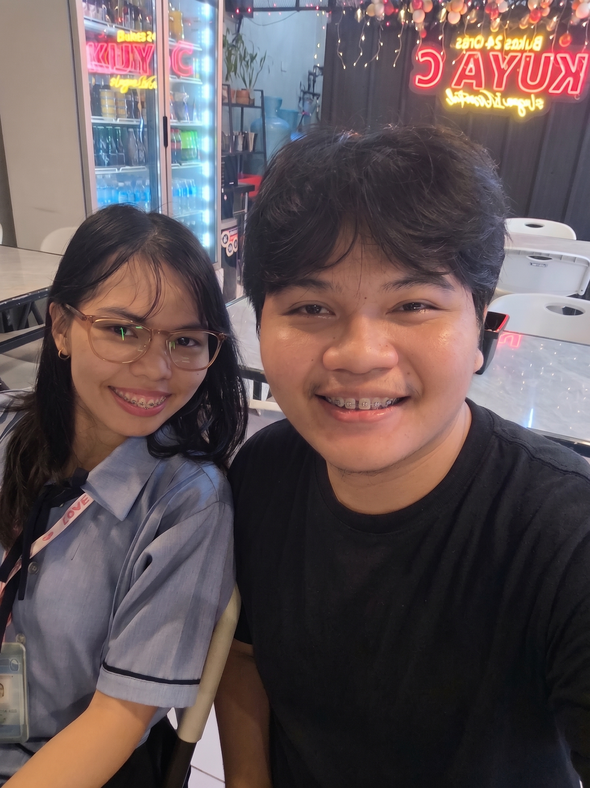

To the girl who makes life bloom
Happy Anniversary

Just like your favorite flowers, my love for you grows softer, deeper, and more beautiful with every passing season.
My Dearest Love,
Happy Anniversary, my love! Look around at all these flowers, I wanted to give you a garden that never fades, because that is exactly how I feel about you every single day since our story began on October 23.
I remember when we first met, it felt like there was an instant spark between us and we became comfortable with each other right away. One of my most memorable moments is when you came over to my house and gently stroked my hair. I love you a lot, I am not just that expressive in words, and I just want to thank you for making me feel so special, like I am one of a kind and truly irreplaceable.
Starting now, I will give you flowers more often because getting them gives you the exact same excitement I feel whenever my new PC parts are arriving. I also finally figured out the price of flowers, haha, for just 350 pesos, you can already get a bouquet with three roses. I hope you are the one I spend my final moments with, and I will love you until my last breath.
Forever & always yours,
Alker Eumague ♥
✨ Tip: Tap anywhere on the screen to bloom flowers ✨